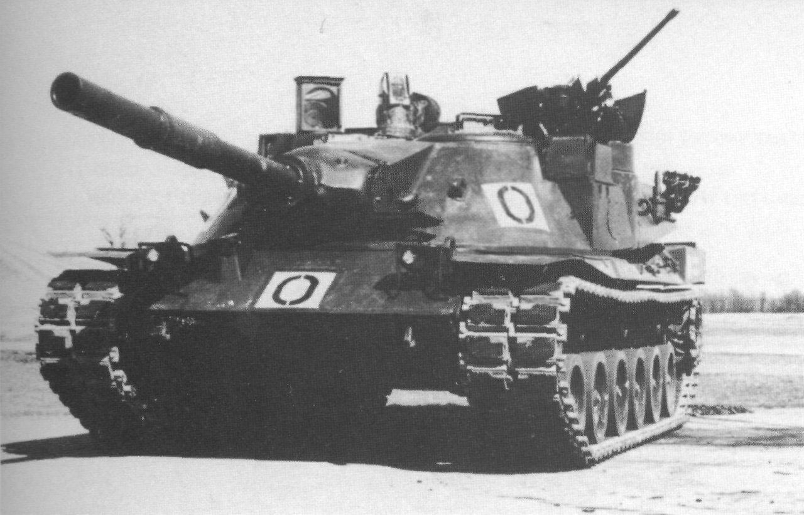

Президент Польщі Анджей Дуда на зустрічі із президентом України Володимиром Зеленським пообіцяв, що Варшава передасть Києву роту бойових танків Leopard 2. Розмови про постачання Україні цього важкого озброєння тривають давно. Однак Польща стала першим союзником, який погодився її передати.
Chas News розповідає про цю одну із найпопулярніших моделей танків у світі.
Історія створення танка Leopard 2
Танк Leopard 2 є наступником бойової машини Leopard 1. Виробником обох моделей є німецьке підприємсто Krauss-Maffei (нині Krauss-Maffei Wegmann).
Історія створення машини бере початок з розробки танка MTB-70 — спільного проєкту США та Німеччини 1960-х років. Згодом він розділився на дві окремі гілки — майбутні Leopard 2 та американські танки M1 Abrams.
Виробництво німецької моделі розпочалось у 1979 році. Саме тоді розробники заклали в машину чотири головні компоненти ефективності Leopard 2:
- високий рівень захисту,
- маневреність на полі бою,
- вогневу потужність,
- систему управління вогнем.
З випуском нових, більш досконалих моделей, ці чотири характеристики лише посилювались.
З 1979 року німецька військова промисловість випустила 3200 танків Leopard 2 та його модифікацій. Зараз вони є на озброєнні армій Німеччини, Норвегії, Іспанії, Польщі, Данії, Канади та інших країн.
Модифікації танка Leopard 2
Основним танком є Leopard 2 (інша назва — А0), однак німецька індустрія створила багато його модифікацій. Ось деякі з них:
- Leopard 2A1 — модель із мінімальними змінами. Танк отримав деякі модифікації та тепловізійний приціл стрільця. Машину випускали до 1983 року.
- Leopard 2A2 — у ці моделі виробник замінив оригінальні приціли PZB 200 на термоприціли EMES 15 та загородив отвори паливних баків. Також машина отримала буксирувальний трос довжиною 5 м. Виробництво моделі припинили у 1987 році.
- Leopard 2A3 — у танку встановили нову цифрову радіостанцію SEM80/90 та заварили люки подавання боєкомплекту.
- Leopard 2A4 — основна і найпоширеніша версія. Танки цієї моделі мають автоматичну систему пожежогасіння, повністю цифрову систему контролю над вогнем та вдосконалену башту з титан-вольфрамовою бронею.
- Leopard 2A5 — машина має клиноподібну башту з додатковим бронювання спереду і по боках. Навідник отримав модернізований приціл, а командир — тепловізор другого покоління.
- Leopard 2A6 — танк оснащений новою 120-міліметровою гладкоствольною гарматою Rheinmetall L55. Для цього було покращено гальмівну систему гармати.
- Leopard 2 PSO (Peace Support Operations) — танк розроблений спеціально для міських боїв під час операцій з підтримки миру. Машина оснащена більш ефективним захистом, станцією з додатковим озброєнням, покращеними можливостями розвідки.
- Leopard 2A7 — не підходить для бою у місті. Модифікації включають додаткову силову установку Steyr M12 TCA, систему камуфляжу Barracuda з системою передачі тепла.
Тактико-технічні характеристики танка Leopard 2
Під час опису властивостей танка є сенс розглядати модифікацію Leopard 2A4. Адже саме ця модель є найпоширенішою. Станом на 1994 рік Німеччина мала на озброєнні 2125 Leopard 2A4, ще близько 380 одиниць виробила Швейцарія.
Захист. Танк Leopard 2 вкритий багатошаровою бронею. Снаряди великих калібрів та камулятивні снаряди наштовхуються на верхню лобову деталь танка. Борти і корма бойової машини захищені від важких кулеметів, гармат середнього калібру та гармат старих версій.
Озброєння. Leopard 2 оснащений 120-міліметровою гладкоствольною гарматою виробництва Rheinmetall, як у танка M1 Abrams. Її боєзапас складає 27 снарядів, у кормі башти є ще 15 додаткових снарядів. «Леопарди» здатні влучати в цілі на відстані у 2 км. Також танк оснащений двома кулеметами. Німецькі, швейцарські та голландські моделі використовують різні типи цієї зброї. На борту Leopard 2 є 4750 патронів до кулеметів. Танк здатний розганятися до 68 км/год. Машина має реверсний хід на швидкості 31 км/год. Повний розворот на місці може здійснити за 10 секунд. Leopard 2 форсує водні перешкоди глибиною до 4 м за допомогою шноркеля або глибиною 1,2 м без підготовки. Також танк здатний перебиратися через перешкоди висотою до 1 м.
Екіпаж Leopard 2 складається з чотирьох людей — командир, націлювач, радист/заряджальник, водій.
Ціна танка коливається в залежності від його модифікації. Новий Leopard 2A6 коштує близько $6,79 млн, а вартість Leopard 2A7+ може сягати $10 млн за одиницю.